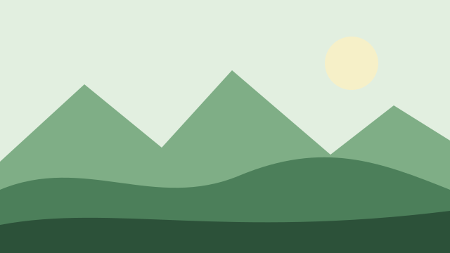

Пространство
Всё на своих местах
Небольшие детали. Цельный интерфейс.
АМ+1
Вместе удобнееМягкие поверхности, точные отступы и спокойная типографика. Стили вашего проекта теперь в самостоятельном CSS-фреймворке.
Небольшие детали. Цельный интерфейс.
Семантические цвета, шаг отступов 4 px и адаптивные размеры.
--background-main · --accent-main| Цвет | Исходный | Градация 2 | Градация 3 |
|---|---|---|---|
| Фон | --background- | --background- | --background- |
| Акцент | --accent- | --accent- | --accent- |
| Текст | --text- | --text- | --text- |
| Ошибка | --danger- | --danger- | --danger- |
Раскладку задают явно: сетка, строка или колонка.
.tg-grid · .tg-row · .tg-colСетка подходит равноправным блокам, .tg-row переносимому ряду, .tg-col вертикальному потоку. Карточка не угадывает раскладку своих детей: поток выбирают классом.
Все 287 иконок. Поиск по имени и тегам, три размера и готовая разметка. Каждый SVG загружается отдельно.
.tg-icon · .tg-searchСтрелки и Home/End перемещают фокус, Enter выбирает иконку. Tab выходит из галереи.
Попробуйте другой запрос.
Разметка выбранной иконки
Декоративную иконку скрывайте через aria-hidden. Имя действия задаёт текст кнопки или aria-label, а не title внутри SVG. Feather 4.29.2 · MIT.
Одинаковая капсула, разное поведение.
.tg-chip · .tg-badgeФильтр делается кнопкой button с aria-pressed и рамкой: его можно нажать. Статус делается span без рамки и без обработчика. Не делайте статус кнопкой и не выдавайте фильтр за статус одним оформлением. Фильтрацию данных подключает приложение.
Если метка всё-таки ведёт куда-то, она становится ссылкой и получает рамку, область нажатия 44 px и фокус. Рамка здесь сигнализирует «можно нажать», а не украшает.
Точка повторяет цвет текста бейджа и помогает быстро пробежать глазами столбец статусов. Смысл по-прежнему несёт слово: точка без текста — не статус.
Сегменты переключают значение, а не панель: для одного варианта это нативные радиокнопки внутри fieldset — стрелки и Tab работают без скриптов, для нескольких — кнопки с aria-pressed в группе с именем. Выбранный сегмент поднимается над подложкой, как выбранная вкладка: это одно правило выбора для обоих компонентов. --vertical ставит сегменты столбцом для боковых панелей.
Подписи, подсказки, валидация и заметный фокус.
.tg-field · .tg-input · .tg-input-groupБудет видно участникам команды.
Можно изменить в любой момент.
Укажите адрес целиком, например name@mail.ru.
Пример недоступного поля.
Рамка поля обозначает место ввода. Placeholder не заменяет подпись. aria-invalid всегда сопровождается связанной текстовой ошибкой: красный цвет только поддерживает текст.
Рамка принадлежит оболочке .tg-search, а не внутреннему полю. Очистка остаётся дополнительным действием без рамки. Подпись остаётся видимой или доступной скринридеру.
Например, name@mail.ru
Сводку ошибок показывают после проверки формы и переводят на неё фокус. Ссылки ведут к полям; сообщение рядом с полем остаётся доступным через aria-describedby.
Группа полей — одно поле с приставкой, единицей, кодом страны или кнопкой внутри. Рамку, заливку и фокус несёт обёртка, поэтому кольцо фокуса одно. Требования к паролю — подсказка во время ввода: выполненное правило отмечается галочкой, а ошибкой список становится только после неудачной отправки.
Нативные элементы сохраняют клавиатуру, сброс формы и доступность.
.tg-check · .tg-radio · .tg-switchCheckbox подходит для независимого решения, radio для одного варианта из группы, switch для настройки, которая применяется сразу. Невыбранный вариант всегда виден: у него есть граница. Нажимается вся подпись, а не только маленький индикатор.
Диапазон подходит для приблизительного значения; текущее значение показывает связанный output. Для точного числа дайте обычное поле ввода.
Вложенные варианты начинаются под текстом родителя, а не под его флажком. Флажок «Все данные» показывает частичный выбор через indeterminate; это состояние задаёт приложение. Вторая строка варианта — .tg-choice__description.
Карточка выбора — подпись с нативной радиокнопкой или флажком внутри, когда варианту нужны описание или иконка. Выбранная карточка получает акцентную рамку 2 px без насыщенной заливки, фокус клавиатуры виден на всей карточке. Имя варианта — заголовок, описание связано через aria-describedby; выбор виден и в режиме высокой контрастности.
Значение ползунка стоит в output справа от подписи и обновляется при движении. Интервал — два нативных ползунка на одной дорожке: каждый работает стрелками, PageUp и PageDown, ручки не перескакивают друг через друга, а заливка между ними следует --range-start и --range-end. Денежное значение объявляется через aria-valuetext.
Выбор из списка с описаниями, поиск с подсказками, теги, числа и коды.
.tg-listboxПользовательский список нужен, когда у вариантов есть иконка, аватар или описание; иначе хватит нативного select. Кнопка выглядит как поле выбора, список лежит в верхнем слое на той же поверхности, что и меню. Стрелки, Home, End и первые буквы двигают активный вариант, Enter выбирает и закрывает, Escape закрывает без изменений; фокус остаётся на кнопке через aria-activedescendant. Выбранный вариант отмечен галочкой, недоступный пропускается.
Combobox — поле, которое сужает список подсказок по мере ввода. Стрелки двигают активную подсказку, Enter выбирает, Escape закрывает, число найденного объявляется через role="status", а пустой результат так и называется. При множественном выборе выбранные значения становятся тегами перед полем, Backspace в пустом поле удаляет последний. Без скриптов остаётся обычное поле с datalist.
До 6 тегов. Enter или запятая — добавить.
Теги и поле ввода лежат в одной рамке поля и переносятся на новые строки, поле занимает остаток строки. Enter, запятая или вставка добавляют тег, повтор не добавляется, Backspace в пустом поле удаляет последний тег. Кнопка удаления — знак 24 px с областью нажатия 44 px и именем вида «Удалить тег счета»; добавление и удаление объявляются. Значения уходят с формой скрытыми полями.
Числовое поле с кнопками «−» и «+» — для небольших количеств. Это нативный input type="number": стрелки клавиатуры и ввод работают как обычно, скрыт только встроенный спиннер. Кнопки по 44 px с именами, у крайнего значения кнопка становится недоступной. --pill — капсульный вариант.
Отправили на +7 ••• ••• 42 18. Код для примера — 246810.
Код вводится в одно настоящее поле: работают вставка всего кода, автозаполнение из СМС и одна остановка Tab. Ячейки только показывают введённое и подсвечивают текущую позицию. После шестой цифры код проверяется: результат объявляется, при ошибке ячейки получают рамку ошибки, при успехе — акцентную. На узком экране сжимается промежуток, а не высота ячеек.
Колесо крутится прокруткой и стрелками; можно ввести и обычным полем времени.
Колесо — столбцы со снапом к центральной полосе, как в системном выборе времени на телефоне. Каждый столбец — список вариантов с именем: стрелки шагают, значение объявляется, края затухают маской прозрачности. Рядом всегда допустим обычный ввод.
HEX, например #1F6FEB.
Базовый выбор цвета — нативный input type="color" и поле HEX в одной рамке: неверное значение получает состояние ошибки. Расширенный выбор добавляет область насыщенности и яркости, ползунок оттенка и готовые цвета-радиокнопки. Область управляется двумя скрытыми ползунками, поэтому всё выполнимо с клавиатуры. Здесь показываются цвета содержимого, поэтому оттенки не ограничены палитрой интерфейса.
Часто используемые
Выбор эмодзи — поиск и сетка ячеек по 44 px. Стрелки ходят по сетке, Enter выбирает, у каждого эмодзи русское название — по нему же ищет поиск, пустой результат так и называется. На телефоне выбор открывается снизу.
Поле даты, сегментный ввод, календарь месяца и диапазоны с пресетами.
.tg-calendarНативное поле: на телефоне откроется системный выбор.
Сегменты: ↑ и ↓ меняют значение, цифры вводят, ← и → переходят.
Известную дату или время вводят в нативное поле type="date" или type="time" с видом обычного поля — это первый выбор. Сегментное поле нужно, только когда формат или ограничения не даются нативному: день, месяц и год — отдельные spinbutton с именами в одной рамке поля.
| Пн | Вт | Ср | Чт | Пт | Сб | Вс |
|---|---|---|---|---|---|---|
Календарь — таблица с ролью grid: дни 44 px, сегодня отмечен кольцом и aria-current="date", выбранный день залит акцентом, дни соседних месяцев приглушены. Стрелки ходят по дням и неделям, PageUp и PageDown — по месяцам, с Shift — по годам, Home и End — к началу и концу недели, Enter выбирает; в таблице одна остановка Tab. Точки событий повторены в имени дня, название месяца объявляется при смене.
Период отчёта:
| Пн | Вт | Ср | Чт | Пт | Сб | Вс |
|---|---|---|---|---|---|---|
| Пн | Вт | Ср | Чт | Пт | Сб | Вс |
|---|---|---|---|---|---|---|
Диапазон выбирают двумя нажатиями: начало, затем конец; пока конец не выбран, наведение показывает будущий период. Между концами идёт сплошная мягкая полоса, концы залиты акцентом, начало и конец объявляются отдельно. Пресеты стоят слева списком кнопок, на телефоне — рядом чипов над одним месяцем. Выбор применяется кнопкой «Применить».
Настоящий file input, локальный предпросмотр и честный статус.
.tg-uploadФайл не выбран
Рамка обозначает область выбора файла: вся область служит label для скрытого input. Не обещайте перетаскивание без реализации. accept помогает выбору, но не заменяет проверку типа и размера на сервере.
Под зоной выбора выбранные файлы идут строками: имя и размер, прогресс, статус и действие. Состояние строки — data-state: загрузка, готово, ошибка; ошибка названа текстом, а не только цветом иконки. Зона остаётся нативной подписью с input type="file", на сенсорных экранах подсказка про перетаскивание скрыта.
Карточка собирает сведения об одном объекте. Действия внутри остаются отдельными элементами.
.tg-card · .tg-divider · .tg-statОбъединяйте задачи, заметки и людей в одном месте.
Счёт разделён между двумя участниками.
Карточка является панелью: её рамка отделяет объект от фона. Интерактивны только элементы внутри: ссылка, кнопка, переключатель. Статус «Новый проект» без рамки: на него нельзя нажать. Внутри карточки одно главное действие.

Шесть часов пути, восемь километров, средняя сложность.
Выручка за квартал
1 120 500 ₽
Зоны карточки: медиа доходит до краёв, футер прижат к низу, поэтому карточки в сетке выравнивают свои действия. Карточка-ссылка растягивает единственную ссылку заголовка на всю площадь и при наведении получает рамку действия. Показатель — одно число с подписью и изменением; знак в тексте важнее цвета.
Разделитель с подписью называет выбор между двумя способами. Подпись читается один раз: элемент — разделитель с именем, линии по бокам — оформление. Остальное собрано из готовых карточки, кнопок и поля, отдельного компонента «форма входа» нет.
В медиа-карточке изображение главное: оно доходит до краёв и держит пропорцию. --overlay кладёт текст на изображение поверх затемнения одним цветом — так текст остаётся читаемым и на светлом фото; при наведении фото слегка приближается, текст не двигается. Видео стоит с постером и управлением и не запускается со звуком.
Новая форма оплаты с сохранёнными картами и понятными ошибками.
Чек-лист первых шагов для новых участников пространства.
Выручка, возвраты и новые клиенты
Раскрывающаяся карточка — нативный details с поверхностью карточки: работает без скриптов, а общий атрибут name оставляет открытой одну карточку из группы. Если подробностей много, карточка открывает диалог; при поддержке View Transitions карточка плавно перетекает в диалог, без неё диалог просто открывается.
Счёт согласовала Анна Кузнецова, оплату проверит Михаил Смирнов.
В команде с 2021 года, ведёт закрывающие документы.
Отвечает за «Лесную артель» и «Север».
Всплывающая карточка показывает превью профиля или ссылки после паузы в полсекунды при наведении и сразу при фокусе; уходит с задержкой, чтобы указатель успел на неё перейти. Escape скрывает её. Внутри только дополнительные сведения: всё важное доступно по ссылке, а на сенсорных экранах карточки нет — ссылка просто открывается.
Выручка за октябрь
4,2 млн ₽
План месяца выполнен на 84%
Новые клиенты
48
Должники
7
Средний чек
9 860 ₽
Bento — сетка плиток разного размера: один столбец на телефоне, два с 36rem, четыре с 64rem. Размер плитки задают --span и --row-span, порядок в разметке совпадает с видимым и порядком фокуса — плотной упаковки нет, поэтому при крупном тексте плитки не перекрываются.
Для самозанятых и небольших команд
0₽ в месяц
Для бухгалтерии и продаж
1 490₽ в месяц за участника
Выбрать «Команду»Для групп компаний
По запросу
Связаться с намиКарточка тарифа: название, кому подходит, цена с периодом, действие и список возможностей. Включённое отмечено галочкой, невключённое — тире и словами «не входит». Рекомендуемый тариф выделен рамкой акцента 2 px, которая рисуется внутри карточки, поэтому её размер не меняется; текущий тариф отмечен бейджем и неактивной кнопкой.
Бухгалтер · 4 года в команде
Хочет присоединиться к пространству «Счета».
Менеджер · 2 года
Хочет присоединиться к пространству «Счета».
Юрист · 6 лет
Хочет присоединиться к пространству «Счета».
Аналитик · 1 год
Хочет присоединиться к пространству «Счета».
Осталось 4 заявки
Стопка карточек лежит в одной ячейке сетки; задние отступают вверх и уменьшаются через transform. Решение принимают кнопками — свайп лишь дополнение; уходящая карточка улетает в сторону решения. В дереве доступности только верхняя карточка, остальные помечены inert; число оставшихся объявляется.
Строки-ссылки, строки данных и раскрывающиеся подробности.
.tg-list · .tg-disclosureСтрока, которая куда-то ведёт, делается настоящей ссылкой на всю ширину: отклик при наведении, видимый фокус и стрелка в конце. Внутрь такой строки не кладут другие кнопки и ссылки. Счётчик в строке остаётся статусом, без рамки.
Строки данных не кликабельны: у них нет наведения и стрелок. Разделители помогают читать, суммы набраны .tg-num, итог выделен начертанием, а не цветом.
Любой контент: текст, список или форма. Нативные details и summary работают мышью и с клавиатуры без JavaScript.
Как подключитьРаскрытие строится на нативных details и summary: Enter и Space работают без JavaScript. Заголовок нажимается целиком и откликается на наведение, а содержимое остаётся обычным текстом.
Аккордеон — несколько нативных details одной панелью; шеврон стоит в конце строки и поворачивается при раскрытии. Чтобы открытым оставался один раздел, задайте одинаковый атрибут name. «Развернуть всё» — кнопка приложения.
Клавиши и сочетания, цены, списки возможностей и цитаты внутри текста.
.tg-kbdНажмите /, чтобы перейти к поиску.
Каждая клавиша — свой kbd, сочетание — внешний kbd с вложенными клавишами; знак «+» между ними остаётся тихим текстом. Клавиша не переносится по частям. У символа вроде ⌘ есть title с названием клавиши, а приложение показывает символы своей ОС.
Счёт выставляется в день отгрузки и оплачивается в течение 10 рабочих дней. Напоминание уходит за два дня до срока.
Исключения согласует финансовый директор.
Реквизиты берутся из карточки клиента: client.requisites.
Оболочка редактора даёт рамку, панель форматирования с клавиатурой панели инструментов и типографику текста внутри: заголовки, списки, код и цитаты выглядят так же, как в остальной системе. Кнопки форматирования показывают состояние выделения через aria-pressed. Escape внутри блока выбирает блок целиком, стрелки вверх и вниз переходят к соседнему блоку, выбранный блок отмечен рамкой акцента. Над выделенным текстом появляется панель действий; Alt+F10 переводит в неё фокус, Escape возвращает к тексту.
Перестали гоняться за оплатами: напоминания уходят сами, а должники видны на одном экране.

Выставляем счета прямо со склада, с телефона. Бухгалтерия получает всё в тот же день.
Отзыв — цитата и её автор: blockquote внутри figure, имя в cite. Текст цитаты обычным начертанием, кавычки не нужны. Рейтинг — звёзды в цвете акцента, а не жёлтые, и та же оценка текстом для диктора. Вариант с фото ставит снимок сбоку, на телефоне — сверху.
Бегущая лента отзывов двигается сама, поэтому у неё есть кнопка паузы, а наведение и фокус останавливают движение (WCAG 2.2.2). Копия дорожки для бесшовного круга скрыта от диктора и из порядка фокуса. При сокращённом движении и на телефоне лента стоит и прокручивается вручную.
Причина и следующий шаг вместо пустоты.
.tg-emptyПустое состояние объясняет, почему здесь ничего нет, и предлагает одно действие. Оно не заменяет ошибку загрузки или «ничего не найдено» в поиске.
Инициалы, счётчики и выбор участника.
.tg-avatarАватар сам по себе остаётся изображением без рамки. Счётчик в углу показывает статус и не нажимается. Пунктир у «+5» обозначает свёрнутую группу, а не действие.
Когда аватар можно нажать, например чтобы выбрать участника, он становится кнопкой с доступным именем и получает рамку. Выбранный участник отмечен акцентным кольцом и aria-checked.
Группа аватаров перекрывается на четверть; каждое изображение отделено кольцом цвета фона, последний элемент считает остальных. Имя всей группе даёт aria-label, отдельные аватары остаются декоративными. Цвет кольца подбирают под фон, на котором лежит группа: --avatar-group-ring (здесь — --background-main).
Таблица для сравнения строк, сводка — для свойств одного объекта.
.tg-table · .tg-summary · .tg-bulk-bar| Участник | Позиции | Сумма | Статус |
|---|---|---|---|
| Анна | 3 | 2 400 ₽ | Ожидает |
| Михаил | 2 | 1 600 ₽ | Подтверждён |
| Итого | 4 000 ₽ | ||
| Участник | Роль | Счета |
|---|---|---|
Анна Кузнецова | Бухгалтер | 128 |
Михаил Смирнов | Менеджер | 46 |
Таблица сохраняет нативную семантику: caption, th и scope. На узком экране прокручивается только её область. Числа выровнены к концу строки и набраны табличными цифрами. Сортировку и фильтрацию обеспечивает приложение.
Сводка показывает список «название → значение» для одного объекта (dl). Если строк нужно сравнивать между собой, это таблица.
| Участник | Статус | |||
|---|---|---|---|---|
| Анна Ким | Отправлен | 24 000 ₽ | ||
| Михаил Петров | Просрочен | 9 600 ₽ | ||
| Вера Соколова | Оплачен | 17 800 ₽ | ||
| Итого | 51 400 ₽ | |||
Выбор строк делает флажок, выбранная строка подсвечивается мягким акцентом сама, а действия с выбранным появляются над таблицей. Сортировка — кнопка в заголовке столбца, направление хранит aria-sort на th. На узком экране --stack превращает строки в карточки, и каждая ячейка подписывает свой столбец через data-label.
| Счёт | Клиент | Сумма | Статус |
|---|---|---|---|
| INV-1042 | Лесная артель | 12 400 ₽ | Оплачен |
| INV-1043 | Север | 8 900 ₽ | Ожидает |
| INV-1044 | Гранит | 31 000 ₽ | Просрочен |
| INV-1045 | Лесная артель | 4 200 ₽ | Ожидает |
Ничего не найдено
Измените запрос или сбросьте фильтры.
Панель над таблицей собрана из готовых поиска, чипов-фильтров и меню: .tg-table-toolbar только раскладывает их и переносит на узком экране. Включённый фильтр — нажатый чип, рядом появляется «Сбросить». Число найденного объявляется через role="status", меню «Столбцы» состоит из menuitemcheckbox, а пустой результат предлагает сбросить фильтры.
Пробел берёт пункт, стрелки двигают, Пробел кладёт, Escape отменяет. Мышью — за ручку.
Порядок меняется и без указателя: Пробел на ручке берёт пункт, стрелки двигают его, Пробел кладёт, Escape возвращает на место; каждый шаг объявляется — «Цены и тарифы, позиция 3 из 5». Поднятый пункт парит на тени плавающего слоя, место вставки показывает линия акцента 2 px, ручка — область 44 px.
Линии, области, столбцы и кольца с легендой, подсказкой и таблицей.
.tg-chart2026 к 2025 году, млн ₽
4,2 млн ₽
| Месяц | 2026 | 2025 |
|---|---|---|
| янв | 1,8 | 1,4 |
| фев | 2,1 | 1,5 |
| мар | 2,4 | 1,9 |
| апр | 2,2 | 1,8 |
| май | 2,9 | 2,0 |
| июн | 3,1 | 2,3 |
| июл | 3,4 | 2,4 |
| авг | 3,2 | 2,6 |
| сен | 3,8 | 2,7 |
| окт | 4,2 | 2,9 |
Линии — 2 px со скруглением, площадь под главной серией — та же роль акцента на 12% прозрачности. Серии — один акцент разной силы, и вторая отличается пунктиром: цвет не единственный признак. Сетка — волосяные линии, подписи осей — вторичный текст. При наведении перекрестие и подсказка показывают значения месяца; те же числа доступны таблицей.
Столбцы не толще 24 px, с закруглённым концом 4 px и прямым основанием; между столбцами — воздух. Выделенный день остаётся в полную силу, остальные отходят на 45%, подпись значения стоит над ним. Наведение на столбец выделяет его и показывает подсказку; одна серия обходится без легенды — её называет заголовок.
Октябрь, 1 284 платежа
В кольце сегменты — акцент разной силы, а третий ещё и заштрихован, поэтому части различимы без цвета и в печати. Легенда со значениями и есть текстовая альтернатива; в центре — итог. Между сегментами — зазор цвета поверхности, а не обводка.
Доля выполнения, события по порядку и шаги длинной формы.
.tg-timelineКольцо показывает долю там, где полоса не помещается: заполненность профиля, загрузка в кнопке. Значение задаёт --value от 0 до 100, роль — role="progressbar" с числом. Без aria-valuenow кольцо неопределённое и вращается, при сокращённом движении — мягко пульсирует. Размеры 24, 40 и 64 px; ошибка — --destructive.
Причина — неверная настройка балансировщика.
Настройки откатили, ошибки прекратились.
Следим за метриками ещё час.
Разбор и отчёт для команды.
Горизонтальная, на телефоне — столбец
Хронология — нумерованный список событий: время над текстом, пройденные этапы с галочкой и линией акцента, текущий отмечен кольцом и aria-current="step", ошибка — крестиком. Этапы различаются формой маркера, а не только цветом. --horizontal раскладывает этапы в прокручиваемый ряд для дорожной карты, а на телефоне возвращает столбец.
Шаг 2 из 3
Степпер показывает шаги длинной формы: номер в круге, линия между шагами, пройденный шаг с галочкой и линией акцента, текущий — с aria-current="step", ошибка — с иконкой. На телефоне подписи будущих шагов скрыты, видна только текущая и счётчик «Шаг 2 из 3». --vertical ставит шаги столбцом с описаниями — для чек-листа и онбординга. При переходе фокус уходит на заголовок нового шага.
Расписание — список событий, у каждого полное время текстом; сетка по времени только помогает глазу. Блок занимает строки от --start до --end (по 15 минут) на мягком акценте с линией у начала, пересечение отмечено цветом ошибки и словами. На телефоне сетка уступает место обычному списку по времени.
Карусели, галереи, проигрыватель, сравнение и бегущие ленты.
.tg-carouselКарусель — прокручиваемая область со снапом: без скриптов её листают свайпом, колесом и клавишами. Кнопки сдвигают на один слайд и недоступны на краях, точки показывают и выбирают текущий слайд. Автопрокрутки нет; о смене слайда диктор узнаёт только после нажатия. Подпись лежит на изображении поверх затемнения, а не на размытии.
Галерея строится на той же карусели. --peek оставляет соседние слайды видимыми по краям и ставит текущий по центру; миниатюры — кнопки 56 px, текущая отмечена акцентной рамкой и aria-current. --vertical листает по вертикали, а миниатюры на широком экране встают сбоку.
Затухание края подсказывает, что в области есть ещё содержимое. Маскируется только прозрачность, цвета нет, поэтому текст под краем остаётся читаемым, когда доезжает до середины. Где браузер поддерживает анимации от прокрутки, край у начала и у конца перестаёт затухать. Область фокусируема и прокручивается клавишами.
Проигрыватель: обложка, название, позиция нативным ползунком со временем текстом и кнопки по 44 px с именами. Сравнение «до и после» — ползунок поверх двух изображений: правая картинка обрезается по --compare, граница следует ползунку без анимации, значение объявляется — «до 50%».
Волна голосового сообщения — декоративные полосы поверх нативного ползунка позиции: прослушанная часть в цвете акцента, позиция объявляется временем. Рамка выделения на холсте — акцентная линия 2 px и ручки 12 px с областью нажатия 44 px; стрелки двигают рамку, со Shift — меняют её размер.
Перевалы и озёра
Закаты и бухты
Каньоны и дюны
Тропы у реки
Аккордеон изображений: одна панель раскрыта и занимает больше места, остальные — узкие полосы с вертикальной подписью. Смена мгновенная, без анимации ширины — проявляется только подпись. Раскрывают кнопкой с aria-expanded: нажатием, Enter или Пробелом, не наведением. На телефоне панели идут вертикальным списком.
Coverflow, веер и кольцо — карусель G1, слайды которой поворачиваются по расстоянию до центра через animation-timeline: view(). Без поддержки, при сокращённом движении и на телефоне это плоская лента; трансформации не меняют порядок фокуса, стрелки и точки работают как в G1.
Сообщения, прогресс и ожидание без лишнего шума.
.tg-notice · .tg-progressУведомление сообщает сведения и не является действием: на него нельзя нажать. Смысл передаёт заголовок, цвет только поддерживает его. role="alert" нужен лишь для срочных ошибок; ошибка подсказывает, как её исправить.
Место закончилось: новые файлы не загрузятся.
Прогресс показывает известную долю, подпись дублирует значение. Полосы обозначают идущую обработку. Если длительность неизвестна, используйте spinner.
Skeleton повторяет структуру будущего содержимого при первой загрузке. Для обновления данных поставьте aria-busy="true" на область и снимите после загрузки.
Сообщение может предложить шаг восстановления и способ закрыться. Действия стоят в конце строки и переносятся под текст на узком экране. Запомнить, что пользователь закрыл сообщение, должно приложение.
Баннер — объявление о продукте на всю ширину над шапкой: плановые работы, новая версия. Это aside с именем, а не тревога. Нейтральный фон для служебного, --accent — для новостей; --sticky держит баннер над шапкой при прокрутке. Закрытие стоит в углу и после нажатия возвращает фокус в начало страницы; приложение запоминает, что баннер закрыт.
Окно прерывает задачу; уведомление сообщает о результате и исчезает.
.tg-modal · .tg-toast · .tg-snackbarДиалог строится на нативном dialog: удерживает фокус, Escape закрывает его, после закрытия фокус возвращается. Toast и snackbar получают role="status" и не содержат кнопок: важное действие не должно исчезать по таймеру.
Боковая панель — тот же нативный dialog, прижатый к концу строки на всю высоту. Длинное содержимое прокручивается внутри .tg-modal__body, а заголовок и действия остаются на месте.
Регион уведомлений существует на странице заранее, поэтому экранный диктор объявляет каждое сообщение один раз. Новые уведомления встают стопкой у нижнего края: видно до трёх, задние уменьшаются и уходят назад. При наведении или фокусе стопка раскрывается и таймер скрытия останавливается, чтобы до действия успели дойти Tab. Уведомление с действием живёт не меньше пяти секунд и закрывается Escape.
Каркас страницы, комментарии и панель ввода. В примере нет собственного CSS: оформление полностью задаёт TDS.
.tg-page-shell · .tg-comment · .tg-composer<div class="tg-page-shell">
<header class="tg-page-header">
<div class="tg-container tg-row">
<a class="tg-brand tg-header__title tg-text" href="#demo-content"><svg class="tg-icon" viewBox="0 0 24 24" aria-hidden="true"><use href="../dist/icons/message-square.svg#message-square"></use></svg>Обсуждение</a>
<label class="tg-ms-auto" id="demo-theme-control">Тема примера<select id="demo-theme" class="tg-select" aria-label="Тема примера"><option value="auto">Авто</option><option value="light">Светлая</option><option value="dark">Тёмная</option><option value="ios-dark">Тёмная iOS</option></select></label>
<span class="tg-badge tg-ms-auto">Демо TDS</span>
</div>
</header>
<main class="tg-container tg-page-content" id="demo-content">
<section class="tg-card tg-col" aria-labelledby="demo-title">
<h1 class="tg-header__title" id="demo-title">Готовый экран без CSS приложения</h1>
<p class="tg-mt-0 tg-mb-0">Шапка, контейнер, комментарии и панель ввода используют публичные классы TDS. Измените ширину окна или тему.</p>
<div class="tg-toolbar tg-toolbar--responsive"><span class="tg-text-sm tg-text-muted">Адаптивная панель действий</span><button class="tg-btn tg-btn--secondary" id="demo-open-media"><svg class="tg-icon" viewBox="0 0 24 24" aria-hidden="true"><use href="../dist/icons/image.svg#image"></use></svg>Открыть медиа</button></div>
</section>
<section class="tg-mt-5" aria-labelledby="demo-comments-title">
<h2 class="tg-header__title tg-mb-3" id="demo-comments-title">Комментарии</h2>
<div class="tg-list" id="demo-messages">
<div class="tg-list-item">
<article class="tg-comment">
<span class="tg-avatar" aria-hidden="true"><span class="tg-avatar__initials">АК</span></span>
<div class="tg-comment__body">
<header class="tg-comment__meta tg-row tg-gap-2"><span class="tg-list-item__title">Анна</span><span class="tg-text-sm tg-text-muted">сейчас</span></header>
<p class="tg-comment__text tg-mt-2 tg-mb-2" id="demo-original">На телефоне текст занимает всю ширину, а имя остаётся рядом с аватаром. Ответьте на этот комментарий, чтобы увидеть цитату в панели ввода.</p>
<div class="tg-comment__actions tg-row tg-gap-1"><button class="tg-btn tg-btn--ghost tg-btn--sm" id="demo-reply" aria-label="Ответить Анне">Ответить</button><button class="tg-btn tg-btn--ghost tg-btn--sm" id="demo-toggle-replies" aria-controls="demo-replies" aria-expanded="false">Показать ответы</button></div>
</div>
</article>
<div class="tg-thread tg-mt-3" id="demo-replies" hidden>
<article class="tg-comment"><span class="tg-avatar" aria-hidden="true"><span class="tg-avatar__initials">М</span></span><div class="tg-comment__body"><header class="tg-comment__meta"><span class="tg-list-item__title">Максим</span></header><p class="tg-comment__text tg-mt-2 tg-mb-0">Вложенные ответы тоже адаптируются к ширине экрана.</p></div></article>
</div>
</div>
</div>
</section>
</main>
<footer class="tg-composer" id="demo-composer">
<div class="tg-container tg-composer__inner tg-col tg-gap-2">
<div class="tg-reply-preview tg-text-sm" id="demo-reply-preview" hidden><svg class="tg-icon" viewBox="0 0 24 24" aria-hidden="true"><use href="../dist/icons/corner-down-right.svg#corner-down-right"></use></svg><div class="tg-grow"><span class="tg-text-accent">Ответ для Анны</span><p class="tg-truncate tg-text-muted tg-mt-1 tg-mb-0" id="demo-excerpt"></p></div><button class="tg-icon-btn tg-icon-btn--ghost" id="demo-cancel-reply" aria-label="Отменить ответ"><svg class="tg-icon" viewBox="0 0 24 24" aria-hidden="true"><use href="../dist/icons/x.svg#x"></use></svg></button></div>
<form class="tg-composer__form" id="demo-message-form">
<span class="tg-avatar-size" aria-hidden="true"><span class="tg-avatar"><span class="tg-avatar__initials">В</span></span></span>
<div class="tg-composer__input"><textarea class="tg-textarea tg-composer__textarea" id="demo-message" rows="1" maxlength="2000" placeholder="Написать сообщение…" aria-label="Текст сообщения"></textarea><button class="tg-icon-btn tg-icon-btn--primary" id="demo-send" aria-label="Отправить сообщение" disabled><svg class="tg-icon" viewBox="0 0 24 24" aria-hidden="true"><use href="../dist/icons/arrow-up.svg#arrow-up"></use></svg></button></div>
</form>
<div class="tg-composer__caption tg-text-sm tg-text-muted"><span>Сообщения существуют только в этом примере</span><span>Ctrl / ⌘ + Enter</span></div>
</div>
</footer>
</div>
tg-page-shell · tg-page-header · tg-page-contenttg-toolbar · tg-toolbar--responsivetg-comment · tg-threadtg-composer · tg-reply-previewtg-media · tg-source-linkTDS определяет размеры, цвета, отступы и адаптивность. Приложение хранит данные, отправляет сообщения и управляет фокусом. JavaScript измеряет высоту composer и клавиатуры через --tg-composer-height и --tg-keyboard-inset, а также подстраивает высоту textarea.
Токены: --layout-reading-width (48rem), --composer-reserved-size (10rem), --composer-input-max-size (2 × space-16), --media-max-size (55dvh). Типографика и существующие контролы не переопределяются.
JavaScript примера · Слоты и ограничения интеграции описаны в README → Screen compositions.
Реплики пользователя стоят в пузырях у конца строки, ассистент отвечает обычным текстом — так длинные ответы читаются легче. Лента — role="log"; во время ответа сообщение получает data-state="streaming", а стриминг, остановку и объявления выполняет приложение. Полный рабочий экран собран из тех же классов без CSS приложения.
crm.export: нет доступа0,4 сПисьма уйдут сразу; отозвать их будет нельзя.
Ход работы помощника — список шагов: значок и текст говорят состояние без анимации (идёт, готово, ошибка), время шага — тихой цифрой, результаты инструмента раскрываются в details. Смена шага объявляется не чаще раза в несколько секунд, таймер не объявляется. Подтверждение — карточка в ленте: вопрос, последствия, варианты, «Разрешить» и «Отклонить». Решение принимает приложение; после ответа карточка становится записью без кнопок, а фокус уходит в поле ввода.
Полупрозрачные поверхности и мягкое появление из исходного проекта. Отклик на нажатие включён у всех кнопок.
.tg-ripple · .tg-glassФон просвечивает сквозь панель. Размытие и насыщенность повторяют исходные настройки.
backdrop-filter · 15pxСтекло подходит плавающим слоям поверх насыщенного фона и не заменяет обычную поверхность. Текст на нём сохраняет контраст; если фон пёстрый, выберите обычную карточку.
Затемнение блокирует область, пока идёт операция. Подпись объясняет, что происходит; spinner декоративен, состояние сообщает role="status".
Переход подходит для дополнительной информации. При скрытии контент исключается из взаимодействия.
Анимируются только прозрачность и сдвиг, длительность берётся из общего --duration. Скрытый блок получает inert, кнопка сообщает состояние через aria-expanded. При reduced motion переход мгновенный.
Выставляйте, отправляйте и сверяйте в одном месте.
Начать бесплатноЗапись расшифровывается и прикрепляется к счёту.
Послушать примерСлой фона — canvas.tg-effect-layer за содержимым секции: data-tg-effect выбирает программу («field» — точки света, «waveform» — волны), --effect-intensity от 0 до 1 — плотность и яркость. Рисует только акцентом. Модуль ставит паузу вне экрана и на скрытой вкладке; при сокращённом движении и на сенсорных экранах показывает неподвижный кадр. Без модуля остаётся ровный фон --effect-layer-bg, и страница полностью работает.
Четыре эффекта для одной ключевой кнопки маркетинговой страницы, не для рабочих форм. Свечение — ореол акцента только снаружи края; блик проходит по кнопке при наведении; бегущая граница — акцентная дуга по рамке; магнит смещает кнопку к указателю не больше чем на 4 px. Эффекты не комбинируются, не запускаются на сенсорных экранах, стоят при сокращённом движении и выключаются у недоступной или занятой кнопки. Без модуля — обычная .tg-btn.
Карточка наклоняется к указателю не больше чем на 6°.
Полоса света следует за указателем поперёк карточки.
Мягкое пятно акцента под указателем.
Акценты для одной-двух карточек страницы. Наклон — rotateX/rotateY до 6°; блик и луч берут координаты указателя из --pointer-x/--pointer-y, которые ставит модуль, и меняют только прозрачность и сдвиг слоя. Слой лежит под текстом, поэтому контраст не меняется. На телефоне и при сокращённом движении карточка обычная.
Переход рябью — data-tg-effect="ripple" на карусели и холст .tg-effect-layer поверх области слайдов. При смене слайда холст коротко, не дольше трёх --duration, проигрывает рябь нового изображения и растворяется. Сами слайды и подписи меняются сразу, как в G1; быстрое переключение отменяет переход; на телефоне и при сокращённом движении эффекта нет.
Подключите CSS. Добавьте разметку. Настройте под себя.
t-design-system.css<link rel="stylesheet"
href="t-design-system.min.css">
<button class="tg-btn tg-btn--primary">
Начать
</button>:root {
--button-color: #18745b;
--button-text-color: #fff;
--radius: .75rem;
--space-4: 1rem;
}Ваш CSS вне слоёв имеет приоритет. Для Telegram подключите telegram.css после основного файла. Подробности, SCSS-модули и интеграция Angular — в README.